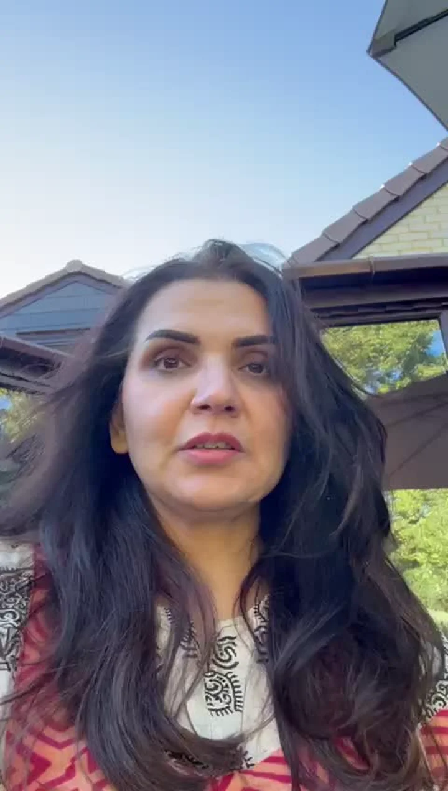
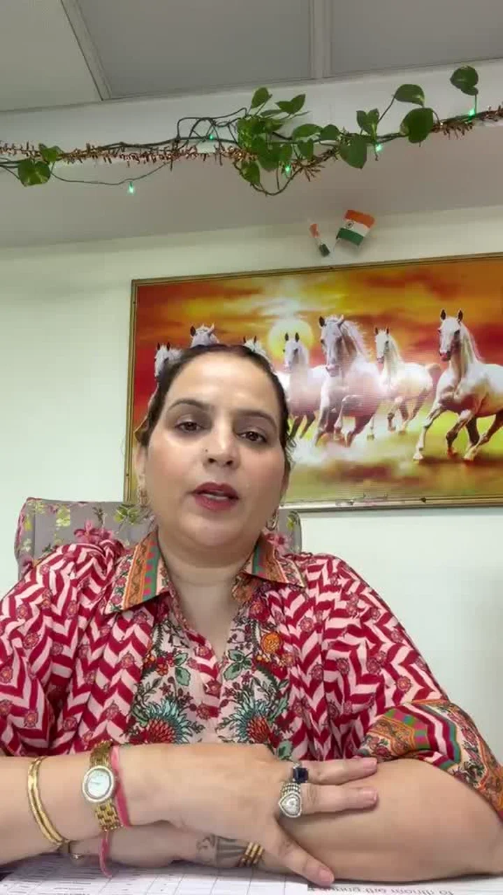

A personal name or spelling
Understand your current name, compare alternatives or consider a spelling change.
THE QUESTION YOU BRING
Understand your current name, compare alternatives or consider a spelling change.
A new venture, a naming shortlist or an identity you want to revisit.
Your birth date, signature, mobile or house number around a particular question.
CLIENT VOICES
Business and personal life
“She helped me and guided me through it. It has helped me with my business and my personal life, and changed me from always thinking negative into thinking more positive.”

Belief in herself
“She only made me aware of the potential that was already inside me. She taught me to believe in myself, and to understand my intuition.”

Accounts of Narayani’s wider guidance, not verified results of this service. Individual experiences are not guarantees; availability mentioned is not a response-time promise.
HOW NARAYANI APPROACHES IT
Start with the name or number and the reason behind your question. For a business identity, bring your work and audience into the discussion.
Tap a label to explore the illustration.
A personal reading, a naming shortlist or a change you are considering.
Read the birth date, name or number relevant to your topic.
Discuss the interpretation and practical implications before deciding on a change.
YOUR CONSULTATION OPTIONS
Choose the topic you want to discuss. You do not need to change a name or number to make an enquiry.
Explore birth-date numbers and the traditional grid around your personal question.
Discuss thisDiscuss your current name, a proposed alternative and the reason for the change.
Discuss thisBring a shortlist or current identity, alongside your work and its audience.
Discuss thisEnquire about reading chart and number perspectives together for a personal or business question.
Discuss thisThis page is for personal consultation enquiries. Ask the team about scope, format, duration and fees; no written report or instant download is sold here.
WHY HER APPROACH MATTERS
The person matters. Explore your beliefs and responses alongside the reading.
The choice stays yours. Ask questions and understand the reasoning. No threats or pressure to purchase a remedy.
BEGIN WITH THE NNG TEAM
Tell the team whether your enquiry is personal or business-related. No birth data or documents are needed here.
Numerology
No form to complete. Choose a topic if useful, or open a general enquiry.
General Numerology enquiry
Open WhatsApp enquiryReview the message in WhatsApp and send it yourself. Opening WhatsApp does not book or pay for a session.
Please do not send private records, home footage or someone else’s information in your first message.
BEFORE BOOKING
No. Understand the interpretation and your reason first. A change is neither mandatory nor a guarantee.
Yes. Ask what information and scope are appropriate before sharing your shortlist.
No. Confirm separately whether a suitable report is offered and what it contains before purchasing.
Share your topic. The team confirms scope, format, duration, fee and availability before you decide.
Numerology is an interpretive tradition, not an established predictor of events or measure of ability. A name, signature or number change does not guarantee health, income, business growth or other outcomes.